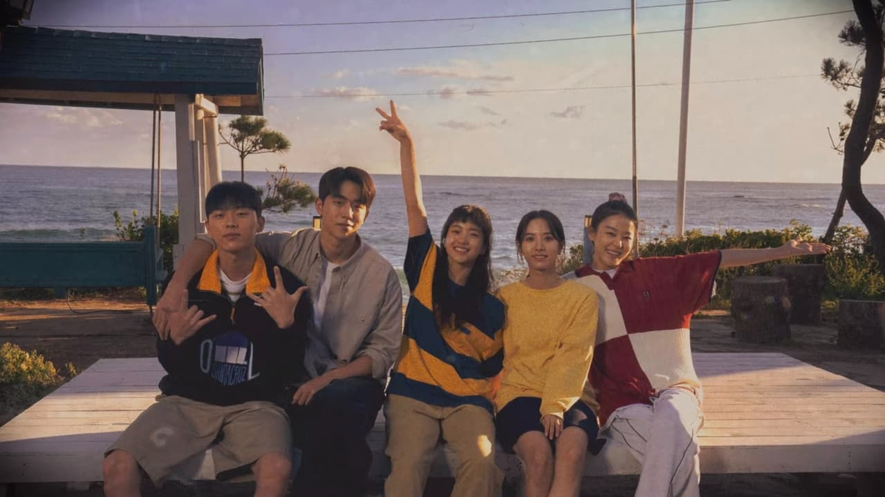
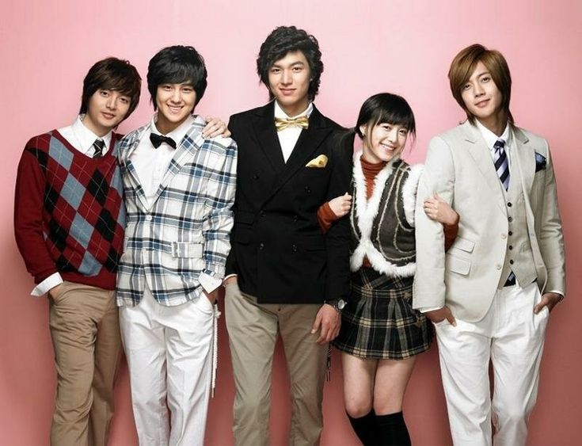
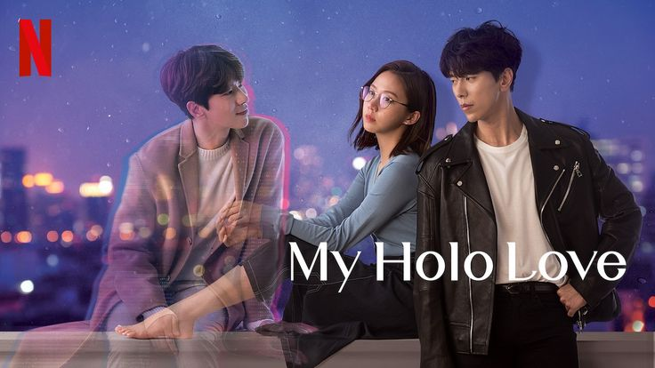
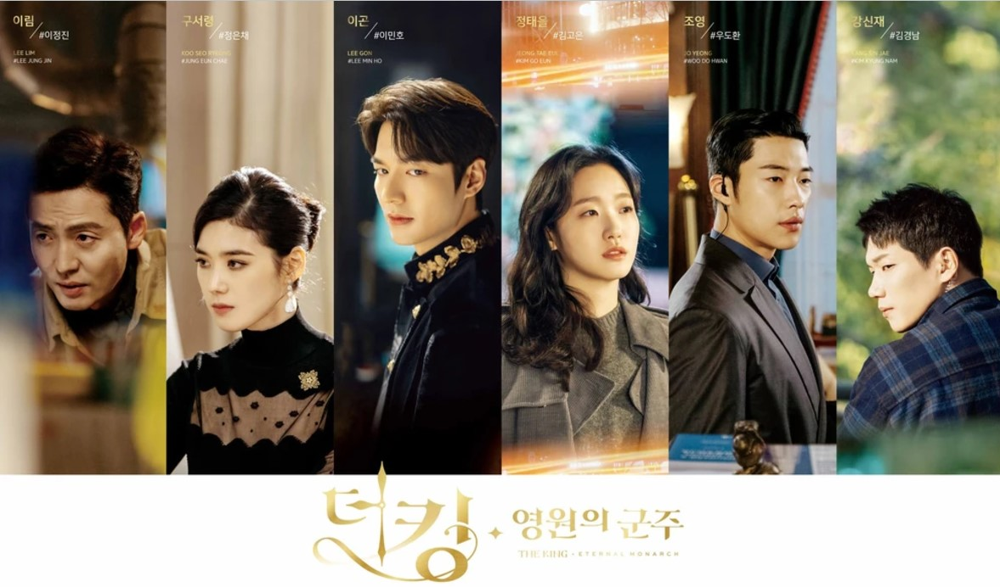
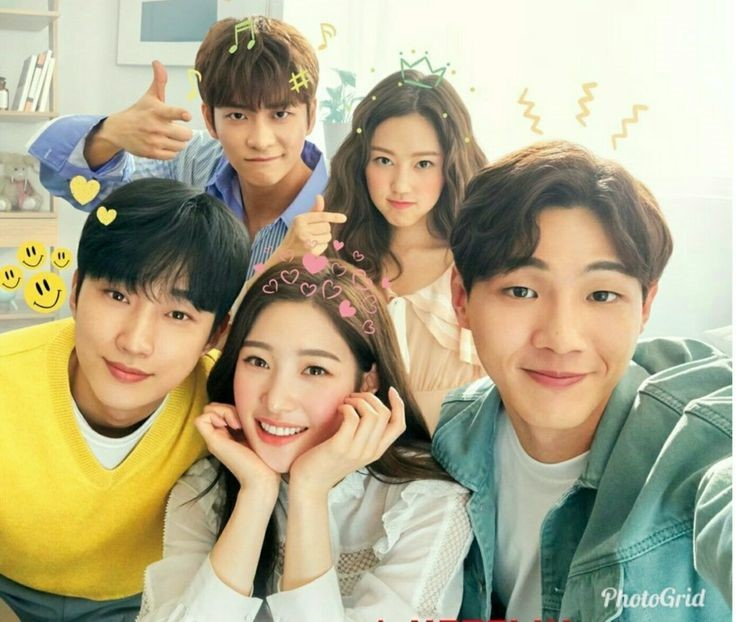
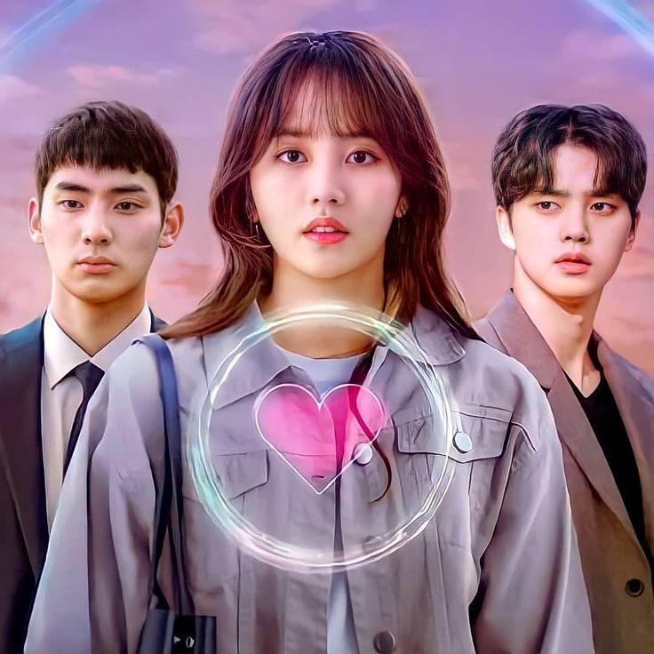
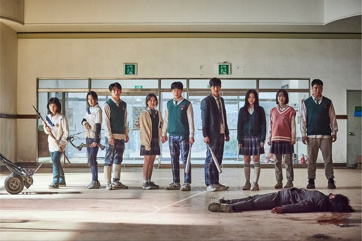
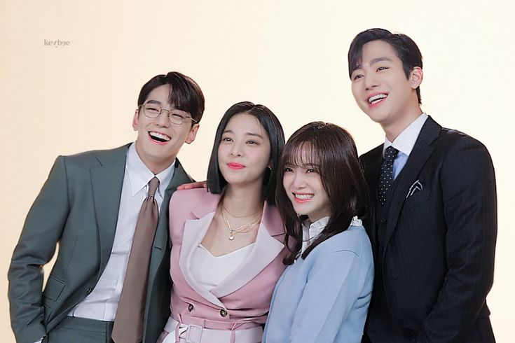
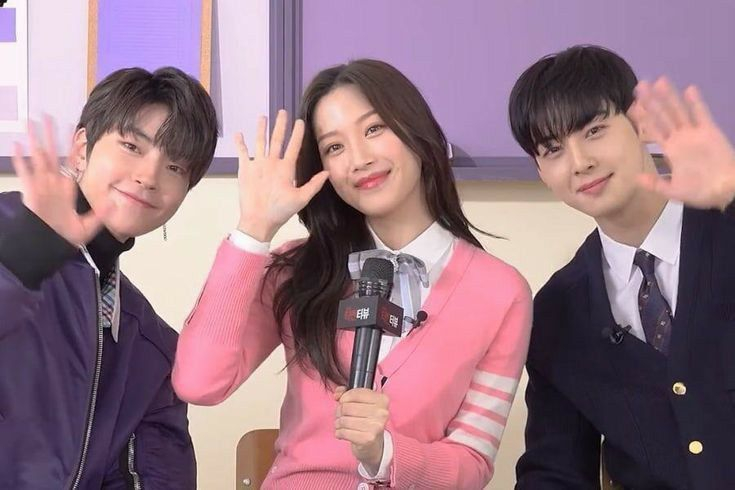
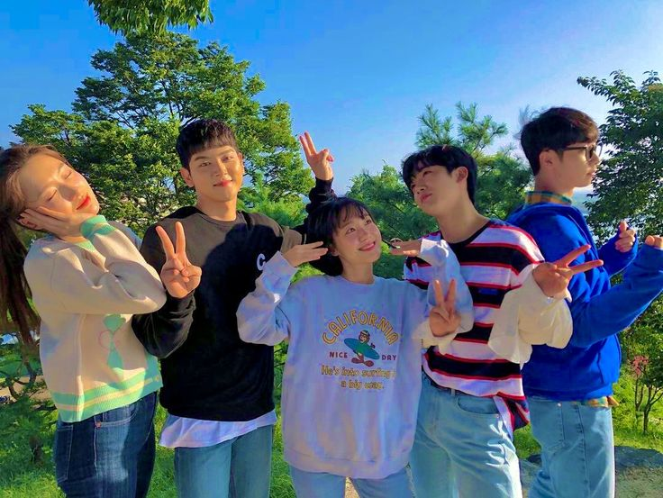

Descubre las historias emocionantes, los giros dramáticos y la cultura coreana a través de los K-Dramas.
Los dramas coreanos se han convertido en el 'must' para seriéfilos de los que todo el mundo está hablando en redes sociales y, por ello, hemos elegido los mejores K-Dramas de Netflix para principiantes que te engancharán desde el primer capítulo.
Esta serie tiene como trasfondo la crisis económica de finales de los noventa. Una esgrimista en busca de sus sueños conoce a un joven cuando contaban con veintidós y dieciocho años, tres años más tarde las tornas han cambiado.
Aborda el tema de la lucha de clases en el instituto. Jan-di, una joven humilde, se enfrenta a los F4, un grupo de niños ricos que acosan a otros estudiantes, y termina enamorándose de uno de ellos.
¿Una mujer que se enamora de un holograma? La solitaria Han So-yeon encuentra al exclusivo prototipo Holo, que la ayudará en todo lo que necesite, dando lugar a una historia única.
Lee Lim, un emperador coreano, atraviesa un portal hacia un mundo paralelo donde conoce a una inspectora de policía. Una historia romántica con un toque fantástico.
Esta serie narra las primeras relaciones amorosas de un grupo de estudiantes universitarios que enfrentan los retos de la vida adulta.
En un mundo donde una app avisa si alguien siente atracción por ti, Kim Jojo enfrenta retos personales mientras descubre su primer amor.
Un grupo de estudiantes queda atrapado en su instituto durante una invasión zombi. Lucharán por sobrevivir mientras esperan ser rescatados.
Una comedia romántica donde una joven se hace pasar por su amiga en una cita a ciegas y descubre que el hombre es el director de su empresa.
Lim Ju-kyung, una estudiante insegura, usa el maquillaje para ocultar su apariencia. La historia se complica cuando dos estudiantes compiten por su amor.
La vida de cinco amigos desde la adolescencia hasta la adultez se complica con un triángulo amoroso entre Shin Sol-yi, Cha Heon y Woo Dae-sung.
